Quick Start
Same route as V9, two extra wires. Choose Use image for on
each card, connect every card to the V10 stack, and wire the two new
outputs so the stack can talk back.
krea-v10-full-showcase-workflow.json shows six jobs plus
balance and both feedback outputs;
krea-v10-counter-example-workflow.json shows the new
away from this image direction. V9 workflows keep working
unchanged, and V9 and V10 cards cross-connect.
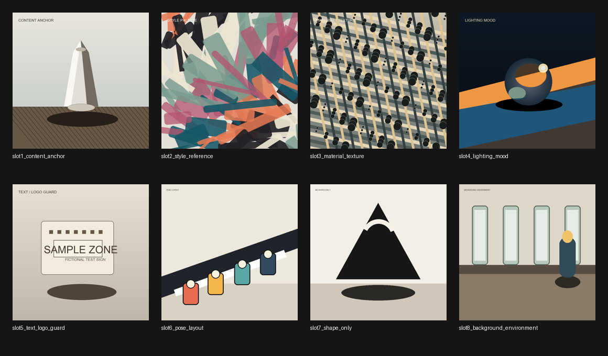
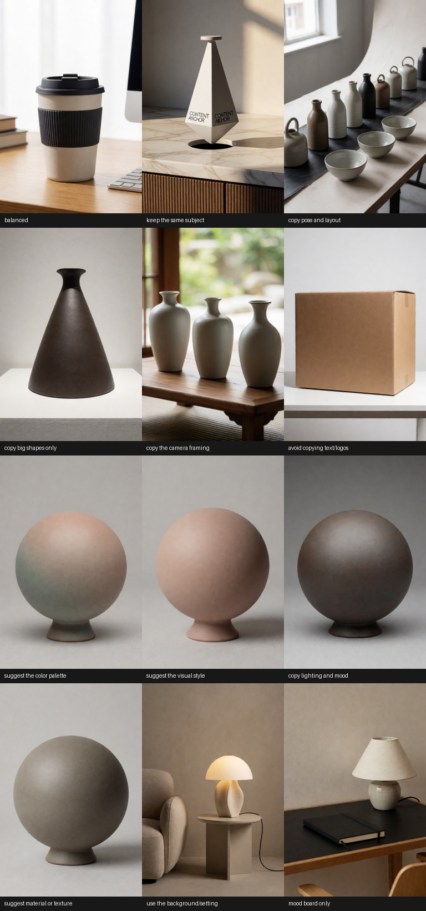
What V10 Adds
Four more jobs
Palette, background/setting, camera framing, and mood board are now one-click recipes instead of manual-tuning projects.
Direction
A card can guide toward its image (V9 behavior) or away from it - a counter-example for a style, palette, layout, or subject you do not want.
Per-card timing
Whole image, early layout only, or final details only - without touching the stack's handoff or the other cards.
Balance
An optional budget keeps several hot cards from fighting; the stack scales them down together and tells you it did.
Study reuse
Image studies are cached by content. Strength and timing tweaks re-run with zero encoder passes.
Feedback outputs
A plain-language stack report and a contact sheet of the prepared references. No more guessing why a card is silent.
Your own recipes
Drop a small YAML or JSON file into custom_recipes/ and it becomes a first-class Use image for choice - no code.
The Four New Recipes
Each was possible in V9 through manual tuning; V10 ships
them as tested one-click bundles.
Suggest The Color Palette
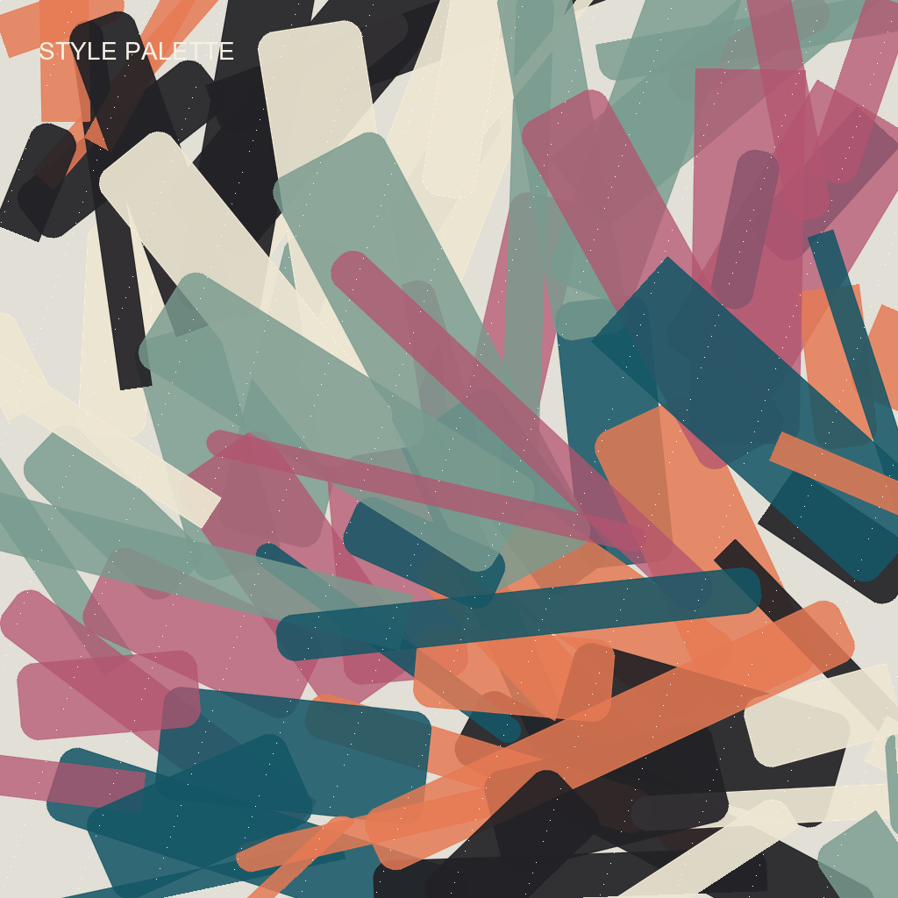
Prompt: a matte ceramic sphere on a small plinth, neutral gray studio backdrop, soft even light, clean unmarked design, no readable text
Borrow broad color palette, contrast, and tonal relationships - nothing else. Same prompt, same seed: the neutral sphere takes on the source's pastel coral-teal-lavender relationships as soft color fields while the abstract source shapes stay out entirely. The recipe whispers below ~0.5, lands clearly from ~0.6, and caps itself at 0.9.
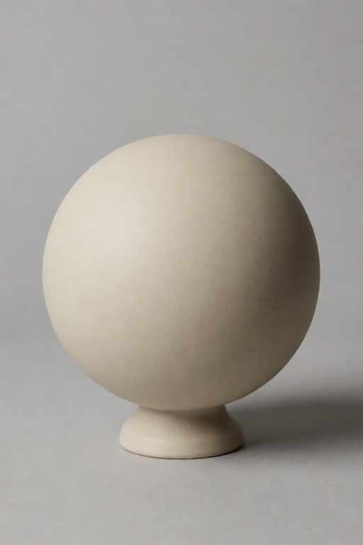
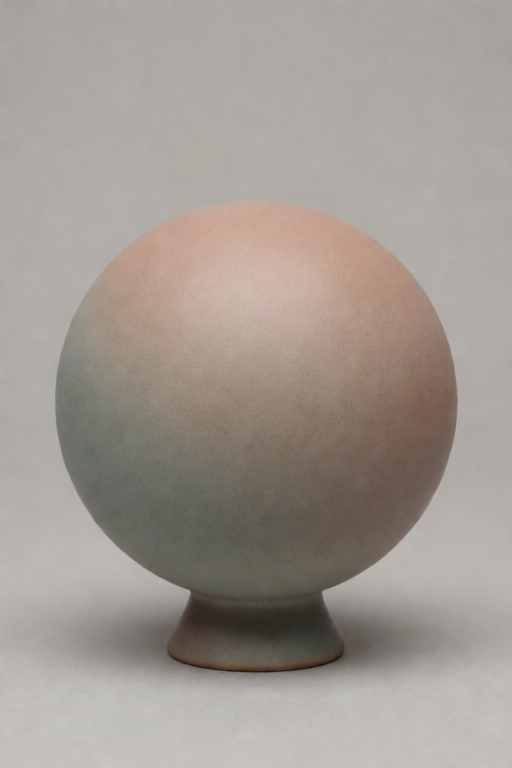
Use The Background/Setting
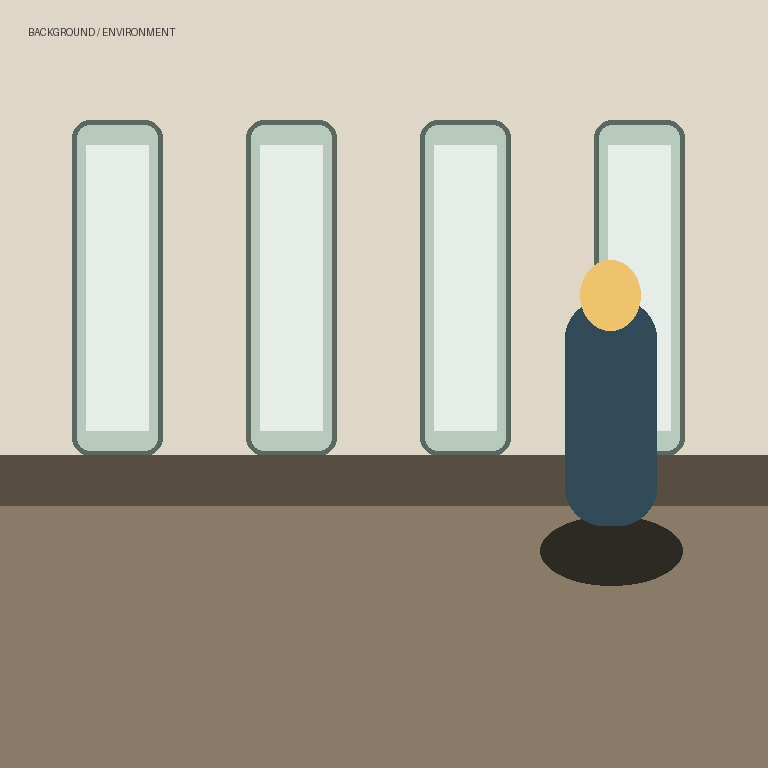
Prompt: a sculptural table lamp on a small side table, editorial product photo, cohesive interior scene, no readable text
Borrow the feeling of the place: the reference's warm
plaster palette and room mood arrive, and the model builds a
coherent interior around the prompt's lamp. The reference is
studied structure-free, so it sets the atmosphere without ever
reshaping your subject into its own forms. Pair it with
keep the same subject for product-in-a-place shots.
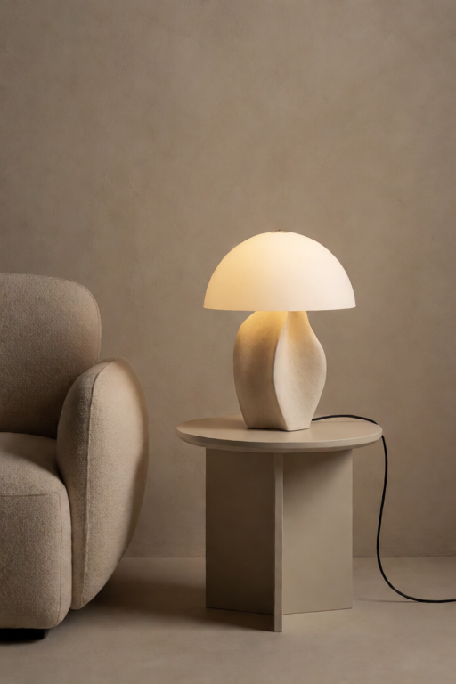
Copy The Camera Framing
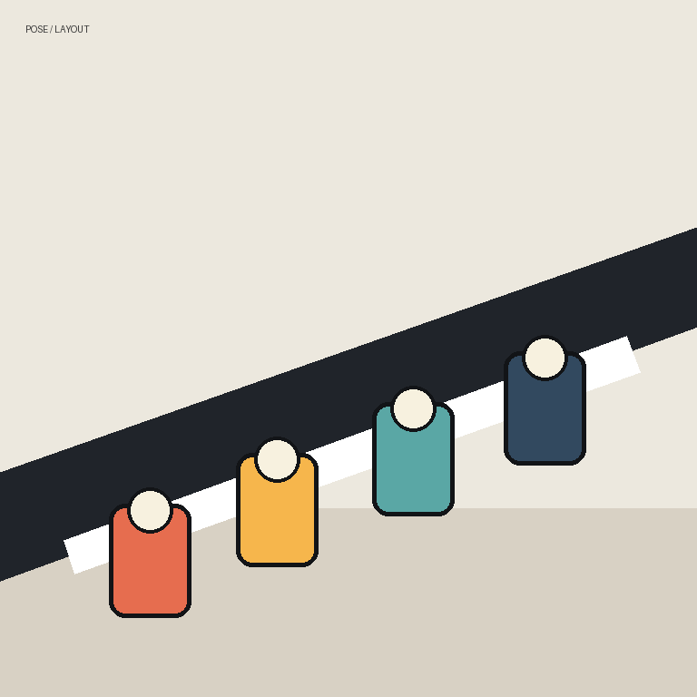
Prompt: three ceramic vases in a row on a low wooden table, plain unmarked surfaces, soft daylight, refined product photography, no readable text
Camera distance, crop, and viewpoint only - the diagonal row
arrangement echoes the reference while subject, palette, and
surface come from the prompt. The reference keeps its aspect
ratio during study because the frame is the
information. Set When this card guides to
early layout only so it composes the shot and then
gets out of the way.
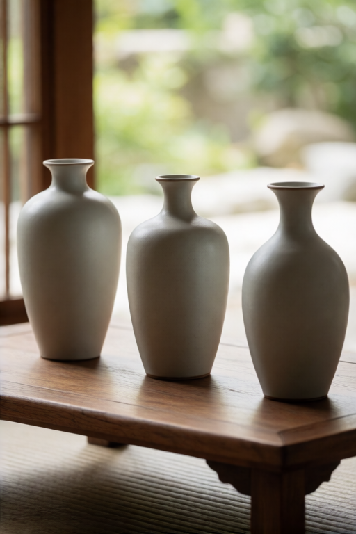
Mood Board Only
Prompt: a calm desk scene with a small ceramic lamp and a closed notebook, editorial photo, no readable text
Loose inspiration that stays gentle and never dictates: the sage-and-cream calm of the source settles over the desk without touching the composition. The recipe is capped so a mood board can never take over the image, no matter where the slider goes - the stack report will show the cap if you push past it.
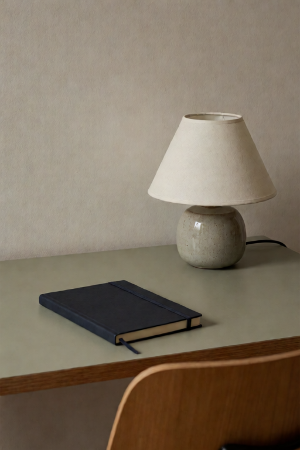
House settings for every demo: krea2 turbo nvfp4, 8 steps, cfg 1.0,
euler/simple, AuraFlow shift 3.14, 512×768, fixed seed per demo;
stack at artist-friendly feel, medium (384) detail, smart per-card
timing, written prompt strength 1.25; negative prompt
boring, dull, blurry, low-quality, fake letters, readable text,
logo, watermark, oversaturated colours. Every demo was rendered
through the real V10 nodes with the current recipe tuning - the
embedded workflow values are exactly what rendered. Full per-demo
settings:
guide-demo-manifest.json.
The Recipe Gallery: Every Job Demonstrated
One demo per built-in recipe - all twelve - on the bundled example
assets, so any row is reproducible. Drag any PNG in
docs/assets/krea-v10/demos/ into ComfyUI to load its
exact workflow.
Per-recipe references, strengths, seeds, and lessons: the gallery table in the Markdown guide and guide-demo-manifest.json.
Create Your Own Recipes
The built-in recipes are settings bundles - and you can write your
own. A custom recipe is a small YAML or JSON file; every file that
passes validation appears in Use image for as a
first-class choice, indistinguishable from a built-in.
web/recipe-builder.html) - open it in any browser, or
from a running ComfyUI at
/extensions/<pack folder>/recipe-builder.html.
Answer three plain-language questions and download a ready-to-use
file; every number comes from the render-validated tables, and the
page states honestly what each job can and cannot do.
Three steps
- Create
custom_recipes/soft-palette-hint.yaml:label: soft palette hint role: palette cap: 0.5
- Refresh node definitions in ComfyUI (or restart).
- Open a V10 guide card -
soft palette hintis now in the dropdown.
Only label and role are required; every
omitted field defaults from the role's tuning tables. Files can
also live in
<ComfyUI user dir>/krea_reference/recipes/,
which survives node-pack updates. Names starting with
_ or . are ignored - that is how the
bundled template ships without adding itself to your dropdown.
A complete recipe
label: vintage postcard style
description: Warm faded palette, soft print finish.
role: style
treatment: palette wash
color: 0.9
detail: 0.0
study: "256"
subject: avoid
early: 0.85
late: 0.9
cap: 0.85
shape: 0.75
global: 1.7
layers: [0.25, 0.35, 0.45, 0.6, 0.8,
1.0, 1.0, 2.5, 5.0, 1.1, 4.0, 1.2]
One file holds one recipe, or a pack:
{"recipes": [recipe, recipe, ...]}. JSON works
identically to YAML.
| Field | Values | Default |
|---|---|---|
label (required) | Dropdown text; must not collide with a built-in or another custom label. | - |
role (required) | balanced, style, palette, composition, framing, identity, environment, lighting, material, loose, shape only, text/logo safe | - |
treatment | normal, grayscale, soft blur, strong blur, palette wash, color wash, grayscale blur, shape wash | normal |
color, detail | 0.0-1.0: how much color / fine detail survives preparation. | 1.0 |
study | stack, 256, 384, 512, 768 | stack |
framing | stack, preserve aspect, center crop square, stretch square | stack |
subject | recipe, avoid, allow, preserve | recipe |
early, late | 0.0-5.0: phase multipliers. | 1.0 |
guard | true applies the full text/logo blank-surface clamp. | false |
cap | 0.0-3.0 hard ceiling on effective strength; omit for none. | none |
shape | 0.0-3.0: the main transfer volume. Below ~0.4 a card is effectively off on Krea 2; appearance recipes work at 0.7-1.0, structure jobs at 1.0-1.3. | role default |
global | 0.0-4.0: pooled overall-look pull - inert on Krea 2 (kept for other models). Fix a weak recipe by raising shape, never global. | role default |
layers | Exactly 12 numbers, 0.0-8.0: per-layer gains. | role table |
description | Free text for humans reading the file. | empty |
What each control really does (render-verified)
1. treatment decides WHAT can transfer -
the reference is re-drawn before the encoder studies it. Colors only:
palette wash (structure-safe: the source's shapes are
destroyed, so its subject cannot leak in). Layout: grayscale
blur. Silhouette: shape wash. The actual subject:
normal. Careful with soft/strong blur - the
source's forms survive and tend to appear at working strengths.
2. shape is the volume knob - the one
channel that moves pixels on Krea 2 (anchors in the table above).
3. layers fine-tunes WHICH bands are
emphasized - second-order polish; it cannot rescue a
too-low shape.
4. global does nothing on Krea 2.
Deriving the layers array
The 12 positions are Krea 2's deepstack bands: 0-4
carry layout and subject structure, 5-6 are
neutral, and finish/palette response concentrates at 8
(strongest), 10, then 7. Omit
layers to use your role's tuned table. To derive your
own: start from the closest family table, scale positions
0-5 by how much structure should arrive and
6-11 by how strongly the finish should,
keeping the spike ordering. Each entry lands as
clamp(strength × shape × gain, -6, +6) per
band, so the gains multiply against shape and
shape sets the floor - a 5.0 spike on a shape-0.7 card is
loud, the same spike on a shape-0.1 card is a whisper. Family tables,
the full chunk map, a copy-paste derivation snippet, a
render-validated worked example, and a two-minute render-testing
protocol: custom_recipes/README.md.
colour) rejects the recipe with a
named error in the ComfyUI log - typos never become silent no-ops.
Invalid recipes are skipped; the node always loads. Across files
(scanned in sorted order) the first definition of a label wins.
balanced with a logged warning. Prefer
adding new recipes over renaming old ones.
Custom recipes compose with everything else: direction, timing, and
the strength slider apply on top, and the stack report names your
recipe on its card line. Design tips and the schema also live in
custom_recipes/README.md inside the pack.
Guide Direction: Counter-Examples
Every card gets a job; in V10 it also gets a direction. Away cards steer the result out of a look instead of into one.
| Combination | Meaning |
|---|---|
away + suggest the visual style | Not this style. |
away + suggest the color palette | Not this palette. |
away + copy pose and layout | Not this composition. |
away + keep the same subject | Keep this subject out entirely. |
Subject copying
says.
The direction journey
Same prompt (a sculptural table lamp in a clean studio product
photo, no readable text), same seed (972106); the only change
is the style card and its direction. Pulled toward at 0.65, the
source's pastel mosaic palette lands all over the lamp. Pushed away
at 0.40, the same card scrubs in the opposite direction - the lamp
comes out plainer and warmer-neutral than even the prompt-only
baseline, because the stack is actively steering out of the source's
palette and manner.
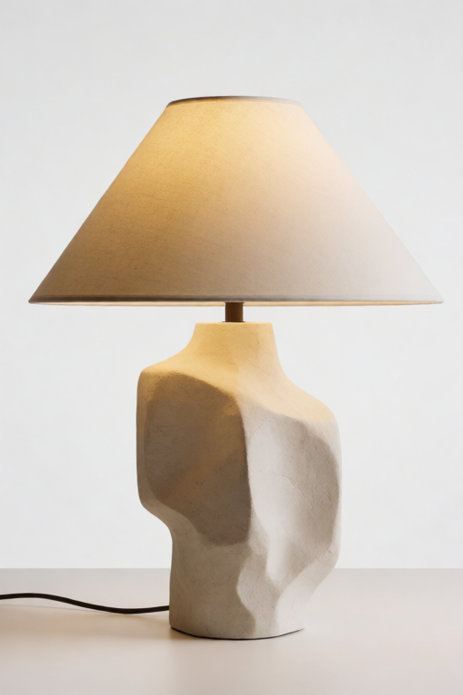
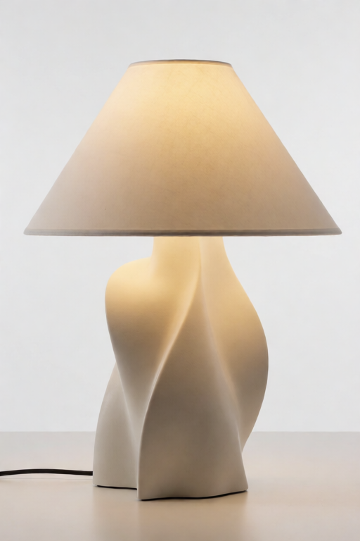
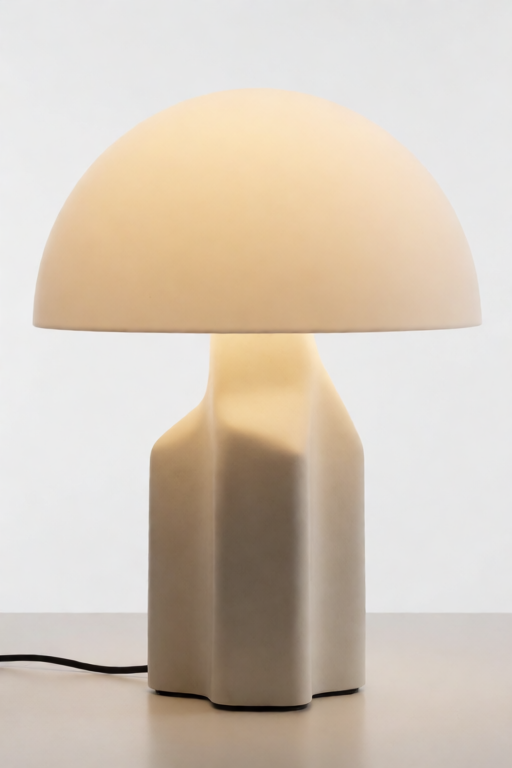
The style source for both cards is the pastel abstract
(slot2_style_reference.png). Away pushes harder per
slider unit than toward because it extrapolates past removal - hence
step 3 runs at 0.40.
example_workflows/krea-v10-counter-example-workflow.json
combines both directions: keep a product with a toward card at 0.80
and push a style out with an away card at 0.25.
Per-Card Timing
recipe decides
Keep the recipe or manual early/late behavior. The V9 default.
whole image
Guide both phases at full card strength.
early layout only
Compose early, then remove this card's influence for the finish.
final details only
Stay out of composition; touch only the finish.
The text/logo guard clamps last: a guarded card never regains late-phase influence, whatever the timing choice says.
The timing journey
Same style card (suggest the visual style, strength
0.75), same seed (972105), same prompt (a modern table lamp in
a clean studio product photo, no readable text) - the only
change is When this card guides. Both timings deliver
the borrowed palette (color commits in the first sampling steps);
what the widget moves is how it lands. Early-only lets the
source guide composition and broad color fields, then the prompt's
finish passes smooth the surfaces into a classic soft-graded shade.
Final-only is the mirror image: the prompt owns the early
composition and the source arrives in the detail passes, laying its
crisp mosaic finish onto the prompt's lamp.
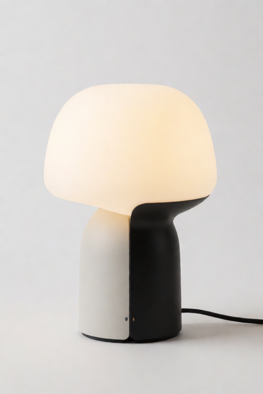
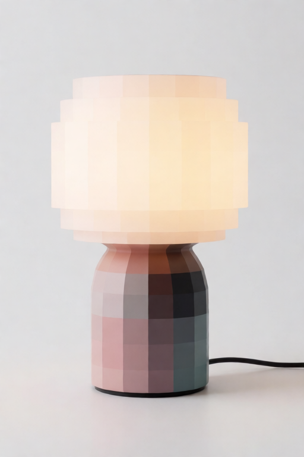
Stack Controls: Balance And Reuse
Balance strong cards
Several simultaneously strong cards blend less faithfully than the same cards used separately. Balance budgets the stack's total pull per timing phase and scales hot stacks down together, keeping your relative ratios.
| Choice | Use when |
|---|---|
off - use my values | Exact V9 behavior. The default. |
gentle balance | Four or more active cards, or two or three aggressive ones. |
strict balance | Conservative blends where fidelity beats punch. |
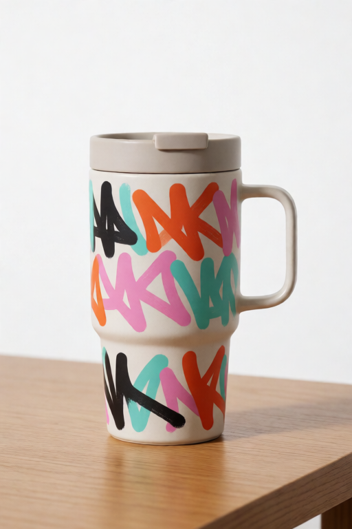
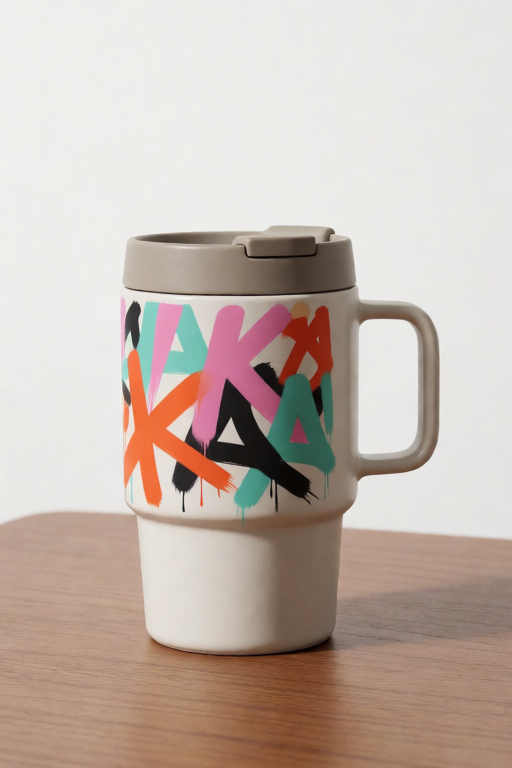
Reuse image studies
Image studies depend only on the prompt and the prepared images -
never on strengths, direction, timing, or balance. With reuse on,
tuning re-runs skip every encoder pass; the report's
Studies: line shows what was saved.
| Choice | Behavior |
|---|---|
reuse between runs - faster tuning | Content-keyed cache; edits to images or prompt re-study automatically. |
always re-study | Exact V9 behavior. Use while hot-swapping CLIP patches or LoRA hooks. |
The Report And The Prepared-References Preview
stack_report → Preview Any
A plain-language account of the run: what each card requested, what it actually got, and why - feel curve, recipe cap, guard clamp, balance scale, encoder pass counts, and skipped cards.
Card 1 (keep the same subject): requested 0.80 -> guiding at 0.70 after the slider feel curve. Card 6 (avoid copying text/logos): requested 0.50 -> capped at 0.03 by the text/logo guard. Studies: 7 encoder passes this run; studies cached for faster tuning.
If a card seems dead, its report line names the reason.
prepared_references → Preview Image
One frame per active card: exactly what the vision encoder studied after framing, washes, color reduction, and detail reduction. The treatments are the node's guaranteed information filter - now you can see them.
Small details kept, pick a stronger
Prepare image by treatment, or reduce the study
resolution until the frame shows only what the card should carry.
Bundled V10 Workflows
| Workflow | Best for |
|---|---|
krea-v10-full-showcase-workflow.json |
First run. Six cards including the new palette, environment, and framing recipes, per-card timing, gentle balance, and both feedback outputs. |
krea-v10-counter-example-workflow.json |
The away direction: keep the subject, push a style out. |
krea-v10-reference-stack-workflow.json |
Compact starter graph for building your own V10 stack. |
Copy example_assets/krea-reference-examples/ into your
ComfyUI input/ folder first so the Load Image nodes find
the bundled example images.
The full showcase journey
Prompt: a ceramic travel mug on a wooden desk in a bright studio, no readable text at strength 1.15.
The mug is the prompt's, anchored by the content card; the desk, books, and window light read bright-studio; the style and palette cards keep the grade quiet and warm; and no readable markings survive the guard. This render used balance off - the gentle-balance render of the same seed sits in the Balance section above. Drag the result PNG into ComfyUI for the exact graph.
{kind=link}
Troubleshooting
| Problem | What to try |
|---|---|
| A card seems to do nothing. | Read its stack report line: the feel curve, a recipe cap, or the guard is usually named there. Appearance recipes are tuned to land from about strength 0.6 - below that they whisper by design. |
| A custom recipe does nothing at any strength. | Its shape is too low (below ~0.5 the card is effectively off on Krea 2) or its study too fine. Raise shape toward 0.7-1.0; raising global will not help on this model. |
| Away card makes the image muddy or empty. | Lower it below 0.30 and make sure something positive says what you do want. |
| Many cards fight each other. | Turn on gentle balance, or lower the two strongest cards. The report shows the applied scale. |
| Style card drags its subject in. | Check the prepared-references preview; if the subject is visible there, lower detail or strengthen the treatment. In manual mode, lower Structure layers pull. |
| Re-runs are slow while tuning. | Set Reuse image studies to reuse between runs and keep the prompt fixed while tuning strengths. |
| Odd behavior after swapping CLIP patches. | Use always re-study while experimenting with CLIP-side changes. |